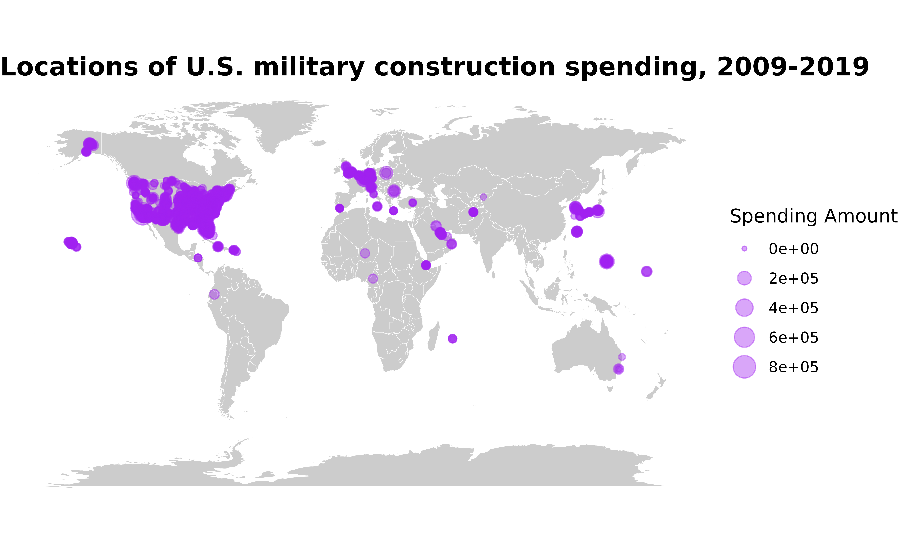

This page provides an overview for the get_basedata()
function, highlighting some of its potential uses.
First things first—let’s load the troopdata package
The troopdata package provides multiple functions to generate
customizable datasets containing information on US military deployments
and accompanying data. The get_basedata() function
represents the core of this package, providing customized data on US
overseas troop deployments, specifically.
Basic Use
Users can call on the get_builddata() returns a data
frame containing geocoded location-project-year military construction
data. The basic arguments function the same as compared to the previous
functions. The primary difference is that the data are currently
available only for all countries and years where the Department of
Defense publicly discloses spending figures from 2008 through 2019. Note
there are also many observations included that contain amounts, but do
not disclose location names or other information.
hostlist <- c(200, 255, 211)
buildexample <- get_builddata(host = hostlist, startyear = 2008, endyear = 2019)
#> Warning: Be advised that the data include unspecified locations, as well as 0
#> or negative spending values.
#> Warning: Spending values are in thousands of current US dollars.
head(buildexample)
#> # A tibble: 6 × 8
#> countryname ccode iso3c year location lat lon spend_construction
#> <chr> <dbl> <chr> <dbl> <chr> <dbl> <dbl> <dbl>
#> 1 United Kingdom 200 GBR 2008 Royal Air Fo… 52.4 0.518 1800
#> 2 United Kingdom 200 GBR 2008 Royal Air Fo… 52.4 0.518 15500
#> 3 United Kingdom 200 GBR 2008 Menwith Hill… 54.8 -2.70 10000
#> 4 United Kingdom 200 GBR 2008 Menwith Hill… 54.8 -2.70 31000
#> 5 United Kingdom 200 GBR 2009 Royal Air Fo… 52.4 0.518 71828
#> 6 United Kingdom 200 GBR 2009 Royal Air Fo… 52.4 0.518 7400As with the base data you can build cool maps using the construction data. You can also size the points according to the amount of spending associated with a particular location, adding some additional details to maps and other figures.
library(ggplot2)
map <- ggplot2::map_data("world")
basepoints <- troopdata::get_builddata(host = NA, startyear = 2009, endyear = 2019)
buildmap <- ggplot() +
geom_polygon(data = map, aes(x = long, y = lat, group = group), fill = "gray80", color = "white", size = 0.1) +
geom_point(data = basepoints, aes(x = lon, y = lat, size = spend_construction), color = "purple", alpha = 0.4) +
coord_equal(ratio = 1.3) +
theme_void() +
theme(plot.title = element_text(face = "bold", size = 15)) +
labs(title = "Locations of U.S. military construction spending, 2009-2019",
size = "Spending Amount")
buildmap